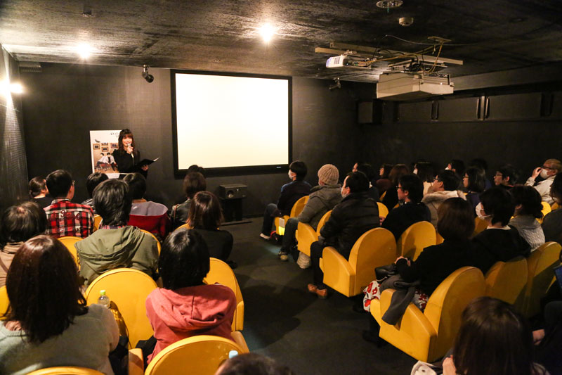
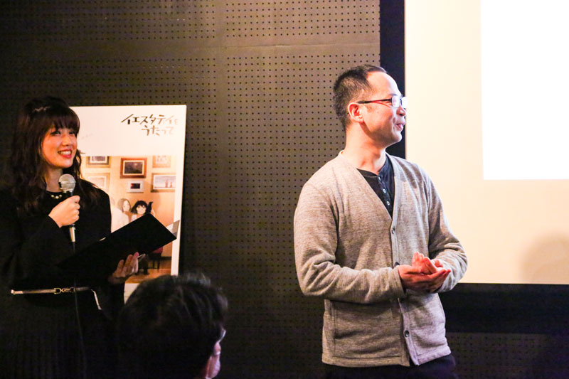
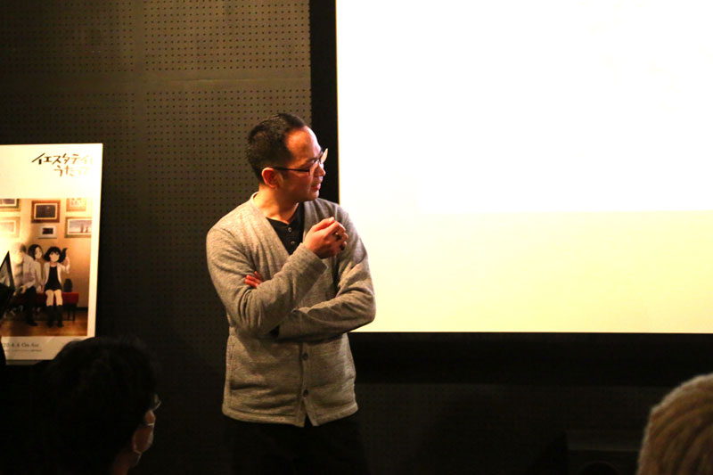
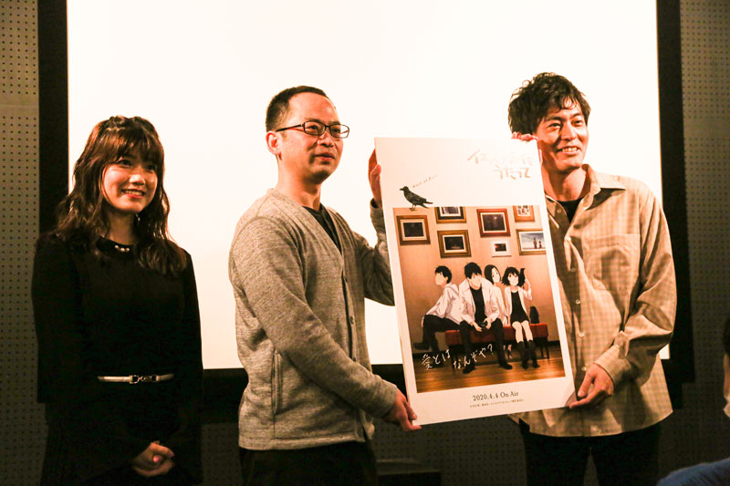

スペシャル
スペシャル【イベントレポート】アニメ「イエスタデイをうたって」先行上映会
藤原佳幸監督、小林親弘さんが熱いトークを繰り広げ約20倍の倍率で当選した原作ファンも興奮！

アニメ「イエスタデイをうたって」製作委員会は、TVアニメ「イエスタデイをうたって」を
2020年4月4日（土）の放送開始に先がけ、2020年2月15日（土）に第1話・2話を上映する先行上映会を開催いたしました。当日は、公式ツイッターの募集から約20倍の倍率の中から選ばれた35名の原作ファンをはじめとした方々をお招きし、ゲストの藤原佳幸監督、魚住陸生役のキャスト小林親弘さん、スペシャルゲストとして、カンスケ役のキャスト前川涼子さんによるトークショーも実施しました。
『イスタデイをうたって』は、1998年よりビジネスジャンプ〜グランドジャンプで連載、2015年に完結した、冬目景先生の漫画作品。コミックスはシリーズ累計140万部を突破。現在もたくさんのファンに愛されています。フリーターである「リクオ」と、リクオの前に突如現れた「ハル」、かつてリクオが憧れていた同級生「榀子」、榀子を追いかけてきた少年「浪」をはじめとした魅力的な登場人物による青春群像劇です。
聖地で開催。作品愛が詰まった先行カット展示も。
上映会はアニメ『イエスタデイをうたって』の舞台の一つである下北沢にある老舗映画館トリウッド で開催。映画館の壁には、キービジュアルや、同日公開された先行カットを展示。予定時間より早く来場された方々が並んで撮影や鑑賞をしている姿が見られました。
開場時間になると、お客さんは「カンスケ」のオリジナルステッカーを手に入場。開演までの間は、劇場内で第二弾トレイラーを視聴。前川涼子さんのMCと共に、「私が何の役かは見てのお楽しみ」の一言と共に、開演となりました。固唾を飲んで見守るような空気感で1・2話の上映が進み、頷きながら観る人・涙ぐみながら観る人などが見られる中、50分の上映時間が観客の拍手と共に終了し、トークショーの流れとなりました。


原作の大ファンである藤原監督が志願し担当、キャストは冬目先生含む満場一致で決定
トークショーは終始、笑いと感嘆の声が行き交い、朗らかな空気の中行われました。
原作の大ファンだったという藤原監督は、ある日たまたま社内でこの作品の企画書を発見し、「是非やらせて欲しい！」と自ら志願して実現に至ったと語りました。とにかく「動いているハルちゃんが見てみたい」という想いでスタートしたそうです。
本作のキャストは全てオーディションで行われ、コミックスを全巻買ってオーディションに臨んだという小林さんは「本当に決まったとき嬉しかった」と振り返りました。まさに「この人、リクオだよね！？」という空気感で、冬目先生を含め満場一致でキャストが決まったそうです。
すんなりキャストが決まり、藤原監督は「同じ方向を向いて作品を作っていけるんじゃないかな」と最初に手ごたえを感じたそうです。


独特な「間」や「キャラクターの距離感や緊張感、不器用さ」が作品の魅力
本作品の魅力について聞かれると、藤原監督は「まずあるのは、冬目先生の画力」と答え、「そして（演出の方法として）キャラクター同士の緊張感、自分がどうありたいのか、相手が自分のことをどう思っているのかを会話しながら徐々にどう変化していくのか、を描いていけたら。」と話していました。一方小林さんは「間」と答え、続いて「一歩進んだらどんどん成長が進むはずが戻るところや、モヤモヤしている関係性のリアルさ」と話し、「不器用さ、人間味」もまた魅力だと語りました。
また、誰に感情移入していたか、の話題になると、藤原監督は「ハルちゃん」と答え、だんだん「榀子、味わい深いな」と変わっていったと話しました。小林さんは「リクオと榀子、どうなるのかな」という目線で読んでいたのが「途中から、ハルめっちゃかわいいな」さらに「でも榀子もいいな」と変わっていき、その時によって共感できるキャラクターが変わるのも魅力の一つだと語りました。


招待者からの質問に、監督から名言が飛び出し大きな拍手
招待者の方から「演出や演技でこだわった点」について聞かれると、監督は「わかりやすく言うとリクオのキョドり具合」と即答。「フラれた後にたまたま公園で再会したときの、目線や緊張感にこだわりました」と続けました。さらに別の招待者の方から「この一言を言えば周りの人が見てくれる、という言葉は？」と聞かれると、「冬目先生による作品のコピーで“愛とは何ぞや”とありますが、僕にとっての愛が、イエスタデイをうたってです」と答え、大きな拍手で会が閉まりました。



{kind=link}
{kind=link}
{kind=link}
{kind=link}
{kind=link}
{kind=link}
{kind=link}
{kind=link}
{kind=link}